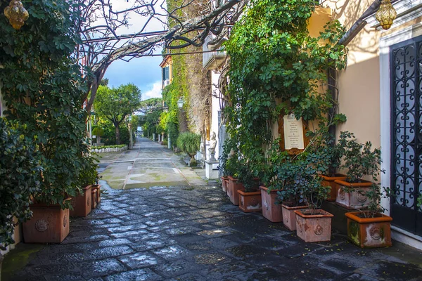

Viaja a Italia en cada sorbo auténtico sabor italiano en cada taza.
Nuestra Historia
La familia Alcaraz, que residía en los alrededores de Sorrento, por la escasez de la época, decide mudarse para así poder tener un futuro mejor, llegando así a la Argentina, y creando la cafetería DolceCappuccino, la cual pasaría de generación en generación hasta llegar al día de hoy, en el cual los más jóvenes de la familia Alcaraz siguen con la tradición de transmitir esas viejas épocas en Sorrento a los argentinos.
¿Por qué nosotros?
Nosotros buscamos que al momento de ir a una cafetería étnica italiana sea más que simplemente disfrutar de una taza de café, es sumergirse en la rica tradición culinaria y cultural de Italia, donde cada sorbo y cada bocado te transportan a las pintorescas calles de Sorrento. Es una experiencia que deleita los sentidos y alimenta el alma, y que seguramente dejará una impresión duradera en todos los amantes del buen café y la buena comida.